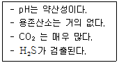
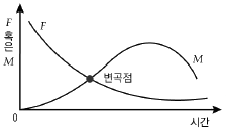
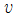
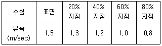
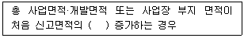

수질환경산업기사 (2016-08-21 기출문제)
1과목: 수질오염개론
1. 물의 물리·화학적 특성으로 옳지 않은 것은?
- 물은 온도가 낮을수록 밀도는 커진다.
- 물 분자는 H+와 OH-로 극성을 이루므로 유용한 용매가 된다.
- 물은 기화열이 크기 때문에 생물의 효과적인 체온조절이 가능하다.
- 생물체의 결빙이 쉽게 일어나지 않는 것은 물의 융해열이 크기 때문이다.
(정답률: 75%)

2. 25℃, 2기압의 압력에 있는 메탄가스 200kg을 저장하는 데 필요한 탱크의 부피(L)는? (단, 이상기체법칙 적용, R=0.082Lㆍatm/molㆍ°K)
- 1.53 × 105
- 1.53 × 104
- 2.53 × 105
- 2.53 × 104
(정답률: 57%)
3. 1차 반응에 있어 반응 초기의 농도가 100mg/L이고, 반응 4시간 후에 10mg/L로 감소되었다. 반응 3시간 후의 농도(mg/L)는?
- 17.8
- 23.6
- 31.7
- 42.2
(정답률: 65%)
4. 해류와 그것을 일으키는 원인이 알맞게 짝지어진 것은?
- 상승류 － 바람과 해양 및 육지의 상호작용
- 조류 － 해수의 염분, 온도 차이에 의해 형성
- 쓰나미 － 해수의 밀도차에 의한 해일작용
- 심해류 － 해저의 화산활동
(정답률: 71%)
5. 용량 600L인 물의 용존산소 농도가 10mg/L인 경우, Na2SO3로 물속의 용존산소를 완전히 제거하려고 한다. 이론적으로 필요한 Na2SO3의 양(g)은? (단, Na 원자량 : 23)
- 약 36.3
- 약 47.3
- 약 56.3
- 약 64.3
(정답률: 55%)
6. 증류수에 NaOH 400mg을 가하여 1L로 제조한 용액의 pH는? (단, 완전해리 기준, Na 원자량은 23)
- 9
- 10
- 11
- 12
(정답률: 55%)
7. Henry법칙에 가장 잘 적용되는 기체는?
- Cl2
- O2
- NH3
- HF
(정답률: 79%)
8. 유량이 5,000m3/day인 폐수를 하천에 방류할 때 하천의 BOD는 4mg/L, 유량은 400,000m3/day이다. 방류한 폐수가 하천수와 완전혼합되어졌을 때, 하천의 BOD가 1mg/L 높아진다고 하면, 하천으로 유입되는 폐수의 BOD 농도(mg/L)는?
- 73
- 85
- 95
- 100
(정답률: 62%)
9. BOD5 300mg/L, COD 800mg/L인 경우 NBD COD(mg/L)는? (단, 탈산소 계수 K1=0.2day-1, 상용대수 기준)
- 367
- 397
- 467
- 497
(정답률: 70%)
10. 1,000m3인 탱크에 염소이온농도가 100 mg/L이다. 탱크 내의 물은 완전혼합이고, 계속적으로 염소이온이 없는 물이 480m3/day로 유입된다면 탱크 내 염소이온농도가 20mg/L로 낮아질 때까지의 소요시간(hr)은? (단, Ci/Co=e-kt)
- 약 61
- 약 71
- 약 81
- 약 91
(정답률: 55%)
11. 여름철 부영양화된 호수나 저수지에서 다음 조건을 나타내는 수층으로 가장 적절한 것은?

- 성층
- 수온약층
- 심수층
- 혼합층
(정답률: 83%)
12. 소수성 Colloid에 관한 설명으로 가장 거리가 먼 것은?
- 표면장력은 용매와 비슷하다.
- Emulsion 상태로 존재한다.
- 틴들(Tyndall)효과가 크다.
- 염에 민감하다.
(정답률: 71%)
13. 진한 산성폐수를 중화처리하고자 한다. 20% NaOH 용액 사용 시 40mL가 투입되었는데 만일 20% Ca(OH)2로 사용한다면 몇 mL가 필요하겠는가? (단, 완전해리 기준, 원자량 Na : 23, Ca : 40)
- 17.4
- 18.5
- 37.0
- 74.0
(정답률: 49%)
14. 하천수 수온은 15℃이다. 20℃에서 탈산소계수 K(상용대수)가 0.1day-1이라면 최종 BOD에 대한 BOD3의 비는? (단, KT = K20 × 1.047(t－20))
- 0.42
- 0.56
- 0.62
- 0.79
(정답률: 53%)
15. 미생물의 성장과 유기물과의 관계곡선 중 변곡점까지의 미생물의 성장상태를 가장 적절하게 나타낸 것은? (단, F : 먹이인 유기물량, M : 미생물량)

- 내생성장 상태
- 감소성장 상태
- Floc 형성 상태
- Log 성장 상태
(정답률: 62%)
16. 하천의 환경기준이 BOD 3mg/L 이하 이고, 현재 BOD는 1mg/L이며 유량은 50,000m3/d이다. 하천 주변에 돼지사육단지를 조성하고자 하는데 환경기준치 이하를 유지시키기 위해서는 몇 마리까지 사육을 허가할 수 있겠는가? (단, 돼지사육으로 인한 하천의 유량증가 무시, 돼지 1마리당 BOD 배출량 : 0.4kg/d)
- 125마리
- 150마리
- 250마리
- 350마리
(정답률: 63%)
17. Glucose(C6H12O6) 600mg/L 용액의 이론적 COD값(mg/L)은?
- 540
- 580
- 640
- 680
(정답률: 74%)
18. 하천 모델의 종류 중 Streeter－Phelps Models에 관한 내용으로 틀린 것은?
- 최초의 하천 수질 모델링이다.
- 하천의 유기물 분해가 1차 반응에 따르는 완전혼합흐름반응기라고 가정한 모델이다.
- 점오염원으로부터 오염부하량을 고려한다.
- 유기물의 분해에 따라 용존산소 소비와 재포기를 고려한다.
(정답률: 58%)
19. 농업용수의 수질평가 시 사용되는 SAR(Sodium Adsorption Ratio) 산출식에 직접 관련된 원소로만 옳게 나열된 것은?
- K, Mg, Ca
- Mg, Ca, Fe
- Ca, Mg, Al
- Ca, Mg, Na
(정답률: 88%)
20. 수질분석 결과, 양이온이 Ca2+ 20mg/L, Na+ 46mg/L, Mg2+ 36mg/L일 때 이 물의 총 경도(mg/L as CaCO3)는? (단, 원자량은 Ca : 40, Mg : 24, Na : 23)
- 150
- 200
- 250
- 300
(정답률: 54%)
2과목: 수질오염방지기술
21. 공장의 BOD 배출량이 500명의 인구당량에 해당하며, 폐수량은 30m3/hr이다. 공장 폐수의 BOD(mg/L) 농도(mg/L)는? (단, 1인당 하루에 배출하는 BOD 45g)
- 31.25
- 33.42
- 40.15
- 51.25
(정답률: 64%)
22. SS가 8,000mg/L인 분뇨를 전처리에서 15%, 1차 처리에서 80%의 SS를 제거하였을 때 1차 처리 후 유출되는 분뇨의 SS 농도(mg/L)는?
- 1,360
- 2,550
- 2,750
- 2,950
(정답률: 68%)
23. 수중의 암모니아(NH3)를 공기탈기법(air stripping)으로 제거하고자 할 때 가장 중요한 인자는?
- 기압
- pH
- 용존산소
- 공기공급량
(정답률: 62%)
24. 하수 내 함유된 유기물질뿐 아니라 영양물질까지 제거하기 위한 공법인 Phostrip공법에 관한 설명으로 옳지 않은 것은?
- 생물학적 처리방법과 화학적 처리방법을 조합한 공법이다.
- 유입수의 일부를 혐기성 상태의 조로 유입시켜 인을 방출시킨다.
- 유입수의 BOD 부하에 따라 인 방출이 큰 영향을 받지 않는다.
- 기존에 활성슬러지 처리장에 쉽게 적용이 가능하다.
(정답률: 50%)
25. 폐수의 고도처리에서 용해성 무기물 제거에 사용되는 공정에 대한 설명으로 맞는 것은?
- 탄소흡착 : 여타 무기물 제거법으로 잘 제거되지 않는 용존 무기물 제거에 유리하다.
- 역삼투 : 잔류 교질성 물질과 분자량이 5,000 이상인 큰 분자 제거에 사용되며 경제적이다.
- 이온교환 : 부유물질의 농도가 높으면 수두손실이 커지고, 무기물 제거 전에 화학적 처리와 침전이 요구된다.
- 전기투석 : 주입수량의 약 30%가 박막의 연속세척을 위하여 필요하고, 스케일 형성을 막기 위해 pH를 높게 유지해야 한다.
(정답률: 59%)
26. 5단계 Bardenpho공정 중 호기조의 역할에 관한 설명으로 가장 적절한 것은?
- 인의 방출
- 인의 과잉섭취
- 슬러지 라이징
- 탈질산화
(정답률: 75%)
27. 폭기조 용액을 1L 메스실린더에서 30분간 침강시킨 침전슬러지 부피가 500mL이었다. MLSS 농도가 2,500mg/L라면 SDI는?
- 0.5
- 1
- 2
- 4
(정답률: 60%)
28. 크롬함유폐수의 처리에 대한 설명으로 틀린 것은?
- 침전과정에서 사용되는 알칼리제는 가능한 한 묽게 사용하며 pH 12 이상에서는 착염을 형성하므로 주의한다.
- 6가 크롬의 환원은 pH 4~5에서 가장 활발하다.
- 6가 크롬을 3가 크롬으로 환원시킨 후 알칼리제를 주입하여 수산화물로 침전시켜 제거한다.
- 6가 크롬의 환원제로는 FeSO4, Na2SO3, NaHSO3 등이 있다.
(정답률: 59%)
29. 고도 수처리에 사용되는 분리막에 관한 설명으로 틀린 것은?
- 정밀여과의 막 형태는 비대칭형 Skin형막이다.
- 한외여과의 구동력은 정수압차이다.
- 역삼투의 분리형태는 용해, 확산이다.
- 투석의 구동력은 농도차이다.
(정답률: 64%)
30. 폐수처리장 2차 침전지에서 침전된 잉여슬러지를 폐기하지 않을 경우 생기는 현상으로 가장 거리가 먼 것은?
- 혐기성 상태가 되어 N2, H2S 등의 가스가 발생하여 냄새가 난다.
- 침전지에서 슬러지가 부상하지 않는다.
- 슬러지 밀도가 높아지며 유출수의 수질은 나빠진다.
- 침전지 수면에 기체방울이 형성되고 부유물질이 방류수와 함께 유출된다.
(정답률: 66%)
31. 유입수의 유량이 360L/인ㆍ일, BOD5 농도가 200mg/L인 폐수를 처리하기 위해 완전혼합형 활성슬러지 처리장을 설계하려고 한다. Pilot plant를 이용하여 처리능력을 실험한 결과, 1차 침전지에서 유입수 BOD5의 25%가 제거되었다. 최종 유출수 BOD5 10mg/L, MLSS 3,000mg/L MLVSS는 MLSS의 75%이라면 일차 반응일 경우 반응시간(hr)은? (단, 반응속도상수 (K)=0.93L/[gMLVSS)hr], 2차 침전지는 고려하지 않음)
- 4.5
- 5.4
- 6.7
- 7.9
(정답률: 40%)
32. 1,000m3/day의 하수를 처리하는 처리장이 있다. 침전지의 깊이가 3m, 폭이 4m, 길이 16m인 침전지의 이론적인 하수 체류시간(hr)은?
- 3.6
- 4.6
- 5.6
- 6.6
(정답률: 60%)
33. 입자농도와 상호작용에 따른 침전형태 중 Stokes Law를 적용할 수 있는 것은?
- 응결침전(flocculent settling)
- 독립침전(discrete settling)
- 지역침전(zone settling)
- 압축침전(compression settling)
(정답률: 64%)
34. 인구 45,000명인 도시의 폐수를 처리하기 위한 처리장을 설계하였다. 폐수의 유량은 350L/인ㆍday이고 침강탱크의 체류시간 2hr, 월류속도 35m3/m2ㆍday가 되도록 설계하였다면 이 침강탱크의 용적(  )과 표면적(A)은?
)과 표면적(A)은?
 = 1,313m3, A = 540m2
= 1,313m3, A = 540m2 = 1,313m3, A = 450m2
= 1,313m3, A = 450m2
= 1,475m3, A = 540m2 = 1,475m3, A = 450m2
= 1,475m3, A = 450m2
(정답률: 65%)
35. 혐기성 소화공정의 환경적 변수가 아닌 것은?
- 온도
- 교반
- 용존산소농도
- pH
(정답률: 59%)
36. 응집제 투여량에 영향을 미치는 인자로서 가장 거리가 먼 것은?
- DO
- 수온
- 응집제의 종류
- pH
(정답률: 65%)
37. 포기조 내의 DO 농도가 2mg/L이고, 이때의 포화용존산소는 8mg/L라고 할 때 MLSS 3,000mg/L에서 MLSS 1L당 산소소비속도가 60mg/Lㆍhr이라고 하면 포기조에서 산소이동계수 KLa의 값(hr-1)은?
- 2
- 6
- 10
- 14
(정답률: 51%)
38. 슬러지의 함수율이 95%에서 90%로 줄어들면 슬러지의 부피는? (단, 슬러지 비중은 1.0)
- 2/3로 감소한다.
- 1/2로 감소한다.
- 1/3로 감소한다.
- 3/4로 감소한다.
(정답률: 77%)
39. 처리장에 22,500m3/day의 폐수가 유입되고 있다. 체류시간 30분, 속도구배 44sec-1의 응집조를 설계하고자 할 때 교반기 모터의 동력효율을 60%로 예상한다면 응집조의 교반에 필요한 모터의 총 동력(W)은? (단, μ=10-3kg/mㆍs이다.)
- 544.5
- 756.4
- 907.5
- 1,512.5
(정답률: 47%)
40. 암모니아성 질소의 처리방법으로 가장 거리가 먼 것은?
- 탈기법
- 화학적 응결
- 불연속점 염소처리
- 토지적용 처리
(정답률: 52%)
3과목: 수질오염공정시험방법
41. 자외선/가시선 분광법에서 흡광도가 1.0에서 2.0으로 증가하면 투과도는?
- 1/2로 감소한다.
- 1/5로 감소한다.
- 1/10로 감소한다.
- 1/100로 감소한다.
(정답률: 64%)
42. 시안의 자외선/가시선 분광법(피리딘－피라졸론법) 측정 시 시료 전처리에 관한 설명으로 가장 거리가 먼 것은?
- 다량의 유지류가 함유된 시료는 초산 또는 수산화나트륨용액으로 pH 6~7로 조절하고 시료의 약 2%에 해당하는 노말헥산 또는 클로로포름을 넣어 짧은 시간 동안 흔들어 섞고 수층을 분리하여 시료를 취한다.
- 잔류염소가 함유된 시료는 L-아스코르빈산 용액을 넣어 제거한다.
- 황화합물이 함유된 초산나트륨 용액을 넣어 제거한다.
- 잔류염소가 함유된 시료는 아비산나트륨 용액을 넣어 제거한다.
(정답률: 46%)
43. 식품공장 폐수의 BOD를 측정하기 위하여 검수에 희석수를 가하여 20배로 희석한 것을 6개의 BOD병에 넣어 3개의 BOD병은 즉시 나머지 3개의 BOD병은 즉시, 나머지 3개의 BOD병은 20℃ 5일간 부란 후 각각의 DO를 측정하였다. 0.025N Na2S2O3에 의한 적정량의 평균치는 4.0mL와 1.5mL이였다면, 이 식품공장의 BOD값(mg/L)은? (단, BOD병의 용량 302mL, 적정액의 양 100mL, 황산망간 2mL, 알칼리 요오드 아지드 2mL, 농황산 2mL를 가하였다. 0.025N Na2S2O3의 역가 1.00)
- 92
- 102
- 112
- 122
(정답률: 39%)
44. 개수로의 평균 단면적이 1.6m2이고, 부표를 사용하여 10m 구간을 흐르는 데 걸리는 시간을 측정한 결과 5초(sec)이었을 때 이 수로의 유량(m3/min)은? (단, 수로의 구성, 재질, 수로단면의 형상, 기울기 등이 일정하지 않은 개수로 경우의 기준)
- 144
- 154
- 164
- 174
(정답률: 52%)
45. 공장폐수 및 하수유량(관내의 유량측정방법)을 측정하는 장치 중 공정수(process water)에 적용하지 않는 것은?
- 유량측정용 노즐
- 오리피스
- 벤투리미터
- 자기식 유량측정기
(정답률: 57%)
46. 인산염인을 측정하기 위해 적용 가능한 시험방법으로 가장 거리가 먼 것은? (단, 수질오염공정시험기준 기준)
- 자외선/가시선 분광법(이염화주석환원법)
- 자외선/가시선 분광법(아스코르빈산환원법)
- 자외선/가시선 분광법(부루신환원법)
- 이온 크로마토그래피
(정답률: 56%)
47. 적정법－산성 과망간산칼륨법에 의해 COD를 측정할 때 염소이온의 방해를 제거하기 위해 첨가할 수 있는 시약으로 틀린 것은?
- 황산은 분말
- 염화은 분말
- 질산은 용액
- 질산은 분말
(정답률: 56%)
48. 지하수 시료는 취수정 내에 고여 있는 물과 원래 지하수의 성상이 달라질 수 있으므로 고여 있는 물을 충분히 퍼낸 다음 새로 나온 물을 채취한다. 이 경우 퍼내는 양은?
- 고여 있는 물의 절반 정도
- 고여 있는 물의 2~3배 정도
- 고여 있는 물의 4~5배 정도
- 고여 있는 물의 전체량 정도
(정답률: 67%)
49. 색도측정법(투과율법)에 관한 설명으로 옳지 않은 것은?
- 아담스－니컬슨의 색도 공식을 근거로 한다.
- 시료 중 백금-코발트 표준물질과 아주 다른 색상의 폐·하수는 적용할 수 없다.
- 색도의 측정은 시각적으로 눈에 보이는 색상에 관계없이 단순 색도차 또는 단일 색도차를 계산한다.
- 시료 중 부유물질은 제거하여야 한다.
(정답률: 74%)
50. 6가 크롬을 자외선/가시선 분광법으로 측정할 때에 관한 내용으로 옳은 것은?
- 산성 용액에서 다이페닐카바자이드와 반응하여 생성되는 청색 착화합물의 흡광도 620nm에서 측정
- 산성 용액에서 페난트로린 용액과 반응하여 생성되는 청색 착화합물의 흡광도를 620nm에서 측정
- 산성 용액에서 다이페닐카바자이드와 반응하여 생성되는 적자색 착화합물의 흡광도를 540nm에서 측정
- 산성 용액에서 페난트로린 용액과 반응하여 생성되는 적자색 착화합물의 흡광도를 540nm에서 측정
(정답률: 71%)
51. 직각 3각 위어를 사용하여 유량을 산출할 때 사용되는 공식과 다음 조건에서의 유량(m3/분)으로 맞는 것은? (단, 유량계수(K)=50, 절단의 폭(b)=1m, 위어의 수두(h)=0.5m)
- Q = Kh5/2, 8.84
- Q = Kh3/2, 17.74
- Q = Kbh5/2, 8.84
- Q = Kbh3/2, 17.74
(정답률: 75%)
52. 이온 크로마토그래피의 장치에 관한 설명으로 틀린 것은?
- 액송펌프 : 펌프는 150~350kg/cm2 압력에서 사용될 수 있어야 하며 시간차에 따른 압력차가 크게 발생하여서는 안 된다.
- 시료의 주입부 : 일반적으로 루프-밸브에 의한 주입방식이 많이 이용되며 시료 주입량은 보통 10~100μL이다.
- 분리컬럼 : 억제기형과 비억제기형이 있다.
- 검출기 : 일반적으로 음이온 분석에는 열전도도검출기를 사용한다.
(정답률: 52%)
53. 실험에 관한 용어 설명으로 틀린 것은?
- 냄새가 없다 : 냄새가 없거나 또는 거의 없을 것을 표시하는 것이다.
- 시험에서 사용하는 물은 따로 규정이 없는 한 정제수 또는 탈염수를 말한다.
- 정확히 단다 : 규정된 양의 시료를 취하여 분석용 저울로 0.1mg까지 다는 것을 말한다.
- 감압이라 함은 따로 규정이 없는 한 15mmH2O 이하를 말한다.
(정답률: 85%)
54. 총 유기탄소의 측정 시 적용되는 용어에 대한 설명으로 틀린 것은?
- 무기성 탄소 : 수중에 탄산염, 중탄산염, 용존 이산화탄소 등 무기적으로 결합된 탄소의 합을 말한다.
- 부유성 유기탄소 : 총 유기탄소 중 공극 0.45μm의 막여지를 통과하여 부유하는 유기탄소를 말한다.
- 비정화성 유기탄소 : 총 탄소 중 pH 2 이하에서 포기에 의해 정화되지 않는 탄소를 말한다.
- 총 탄소 : 수중에서 존재하는 유기적 또는 무기적으로 결합된 탄소의 합을 말한다.
(정답률: 63%)
55. 시료의 전처리방법 중 유기물을 다량 함유하고 있으면서 산분해가 어려운 시료에 적용하기 가장 적절한 것은?
- 회화에 의한 분해
- 질산－과염소산법
- 질산－황산법
- 질산－염산법
(정답률: 57%)
56. 유도결합플라스마－원자발광광도계에 관한 설명으로 틀린 것은?
- 시료 주입부 : 분무기 및 챔버로 이루어져 있다.
- 고주파 전원부 : 고주파 전원은 수정발전식 20.73MHz로 100~300kW의 출력이다.
- 분광부 및 측광부 : 분광기는 기능에 따라 단색화분광기, 다색화분광기로 구분된다.
- 분광부 및 측광부 : 플라스마광원으로부터 발광하는 스펙트럼선을 선택적으로 분리하기 위해서는 분해능이 우수한 회절격자가 많이 사용된다.
(정답률: 62%)
57. 페놀류－자외선/가시선 분광법 측정 시 정량한계에 관한 내용으로 옳은 것은?
- 클로로폼추출법 : 0.003mg/L, 직접측정법 : 0.03mg/L
- 클로로폼추출법 : 0.03mg/L, 직접측정법 : 0.003mg/L
- 클로로폼추출법 : 0.0⑤mg/L, 직접측정법 : 0.⑤mg/L
- 클로로폼추출법 : 0.⑤mg/L, 직접측정법 : 0.0⑤mg/L
(정답률: 71%)
58. 수심이 0.6m, 폭이 2m인 하천의 유량을 구하기 위해 수심 각 부분의 유속을 측정한 결과가 다음과 같다. 하천의 유량(m3/sec)은? (단, 하천은 장방형이라 가정한다.)

- 1.⑤
- 1.26
- 2.44
- 3.52
(정답률: 49%)
59. 0.1N－NaOH의 표준용액(f=1.008)30mL를 완전히 반응시키는 데 0.1N - H2C2O4 용액 30.12mL를 소비했을 때 0.1N－H2C2O4 용액의 factor는?
- 1.004
- 1.012
- 0.996
- 0.992
(정답률: 66%)
60. 자외선/가시선 분광법에 의해 페놀류를 분석할 때 클로로폼 용액에서 측정하는 파장(nm)은?
- 460
- 510
- 620
- 710
(정답률: 51%)
4과목: 수질환경관계법규
61. 오염총량관리기본계획에 포함되어야 할 사항으로 틀린 것은?
- 해당 지역 개발계획의 내용
- 지방자치단체별, 수계구간별 저감시설 현황
- 관할지역에서 배출되는 오염부하량의 총량 및 저감계획
- 해당 지역 개발계획으로 인하여 추가로 배출되는 오염부하량 및 그 저감계획
(정답률: 58%)
62. 수질 및 수생태계 보전에 관한 법률 시행규칙에서 정한 오염도 검사기관이 아닌 것은?
- 지방환경청
- 시·군 보건소
- 국립환경과학원
- 도의 보건환경연구원
(정답률: 74%)
63. 환경부장관이 비점오염원관리지역을 지정·고시한 때에 수립하는 비점오염원관리대책에 포함되어야 하는 사항으로 틀린 것은?
- 관리목표
- 관리대상 수질오염물질의 종류 및 발생량
- 관리대상 수질오염물질의 발생 예방 및 저감 방안
- 관리대상 수질오염물질이 수질오염에 미치는 영향
(정답률: 58%)
64. 비점오염원의 변경신고 기준으로 ( )에 옳은 것은?

- 100분의 15 이상
- 100분의 20 이상
- 100분의 30 이상
- 100분의 50 이상
(정답률: 75%)
65. 폐수 배출규모에 따른 사업장 종별 기준으로 맞는 것은?
- 1일 폐수 배출량 2,000m3 이상 － 1종 사업장
- 1일 폐수 배출량 700m3 이상 － 3종 사업장
- 1일 폐수 배출량 200m3 이상 － 4종 사업장
- 1일 폐수 배출량 50m3 이상 200m3 미만 － 5종 사업장
(정답률: 68%)
66. 공공수역 중 환경부령으로 정하는 수로가 아닌 것은?
- 지하수로
- 농업용수로
- 상수관로
- 운하
(정답률: 80%)
67. 하천수질 및 수생태계 상태가 생물등급으로 '약간 나쁨 ~ 매우 나쁨'일 때의 생물지표종(저서생물)은? (단, 수질 및 수생태계 상태별 생물학적 특성이해표 기준)
- 붉은깔따구, 나방파리
- 넓적거머리, 민하루살이
- 물달팽이, 턱거머리
- 물삿갓벌레, 물벌레
(정답률: 78%)
68. 낚시금지구역 또는 낚시제한구역을 지정하려는 경우에 몇 가지 사항을 고려하여야 한다. 이에 해당되지 않는 사항은?
- 용수의 목적
- 오염원 현황
- 월별 수질오염물질 파악
- 낚시터 인근에서의 쓰레기 발생현황 및 처리여건
(정답률: 55%)
69. 수질 및 수생태계 환경기준 중 하천 전수역에서 사람의 건강보호기준으로 검출되어서는 안 되는 오염물질(검출한계 0.00⑤)은?
- 폴리클로리네이티드비페닐(PCB)
- 테트라클로로에틸렌(PCE)
- 사염화탄소
- 비소
(정답률: 71%)
70. 특정수질유해물질 등을 누출ㆍ유출하거나 버린 자에 대한 벌칙기준으로 적합한 것은?
- 2년 이하의 징역
- 3년 이하의 징역
- 5년 이하의 징역
- 7년 이하의 징역
(정답률: 58%)
71. 시ㆍ도지사 또는 시장ㆍ군수가 도종합계획 또는 시군종합계획을 작성할 때 시설의 설치계획을 반영하여야 하는 시설이 아닌 것은?
- 분뇨처리시설
- 쓰레기처리시설
- 폐수종말처리시설
- 공공하수처리시설
(정답률: 65%)
72. 비점오염저감시설의 구분 중 장치형 시설이 아닌 것은?
- 여과형 시설
- 와류형 시설
- 저류형 시설
- 스크린형 시설
(정답률: 70%)
73. 환경부장관이 폐수처리업의 등록을 한 자에 대하여 영업정지를 명하여야 하는 경우로 그 영업정지가 주민의 생활, 그 밖의 공익에 현저한 지장을 초래할 우려가 있다고 인정되는 경우에는 영업정지 처분에 갈음하여 과징금을 부과할 수 있다. 이 경우 최대과징금 액수는?
- 1억원
- 2억원
- 3억원
- 5억원
(정답률: 55%)
74. 낚시금지구역에서 낚시행위를 한 자에 대한 과태료 기준은?
- 50만원 이하의 과태료
- 100만원 이하의 과태료
- 200만원 이하의 과태료
- 300만원 이하의 과태료
(정답률: 74%)
75. 수질오염물질의 종류가 아닌 것은?
- BOD
- 색소
- 세제류
- 부유물질
(정답률: 66%)
76. 수질오염방지시설 중 물리적 처리시설에 해당되는 것은?
- 응집시설
- 흡착시설
- 이온교환시설
- 침전물개량시설
(정답률: 78%)
77. 폐수종말처리시설 기본계획에 포함되어야 하는 사항으로 틀린 것은?
- 폐수종말처리시설의 설치·운영자에 관한 사항
- 오염원분포 및 폐수배출량과 그 예측에 관한 사항
- 폐수종말처리시설 부담금의 비용부담에 관한 사항
- 폐수종말처리시설 대상지역의 수질영향에 관한 사항
(정답률: 33%)
78. 수질 및 수생태계 환경기준에서 하천의 생활환경기준 중 '매우 나쁨(Ⅵ)' 등급의 BOD 기준(mg/L)은?
- 6 초과
- 8 초과
- 10 초과
- 12 초과
(정답률: 63%)
79. 배출부과금을 부과할 때 고려하여야 하는 사항으로 틀린 것은?
- 배출허용기준 초과 여부
- 수질오염물질의 배출량
- 수질오염물질의 배출시점
- 배출되는 수질오염물질의 종류
(정답률: 78%)
80. 수질 및 수생태계 보전에 관한 법률상 공공수역에 해당되지 않은 것은?
- 상수관거
- 하천
- 호소
- 항만
(정답률: 84%)